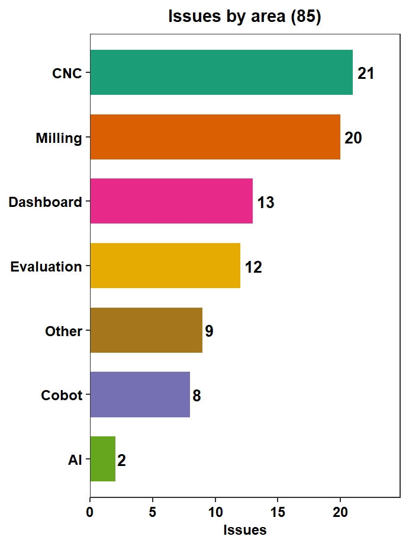
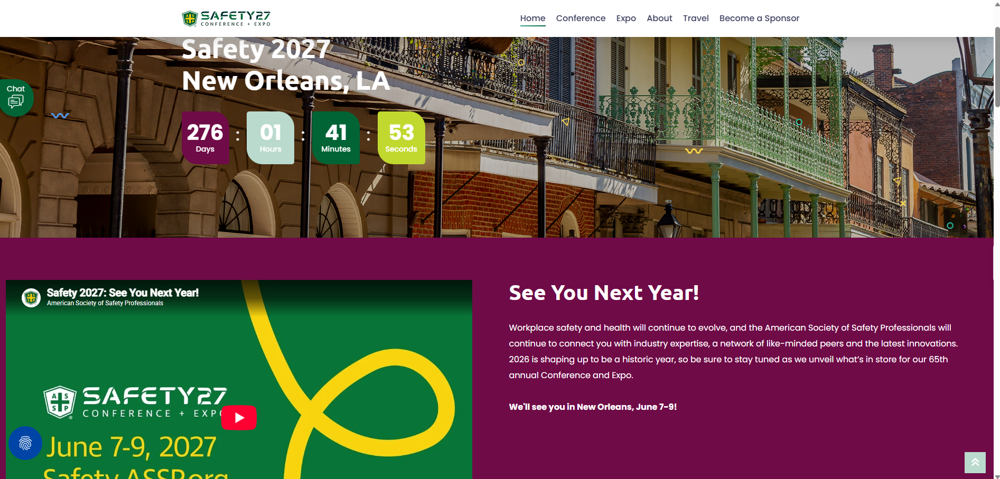
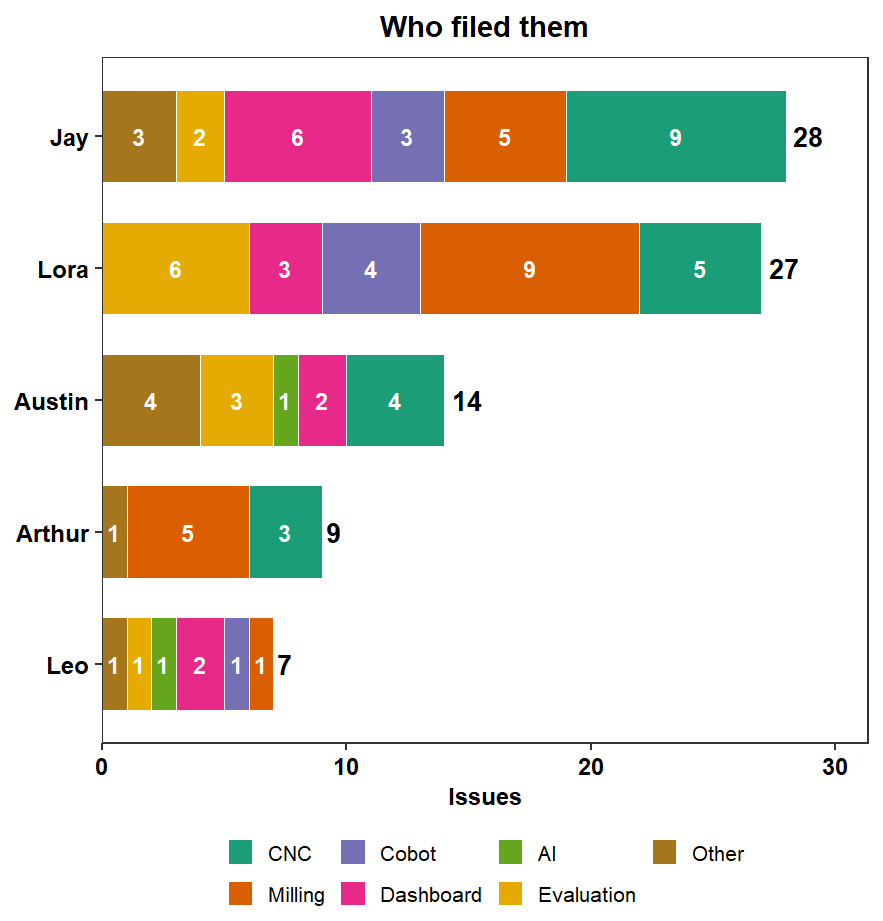
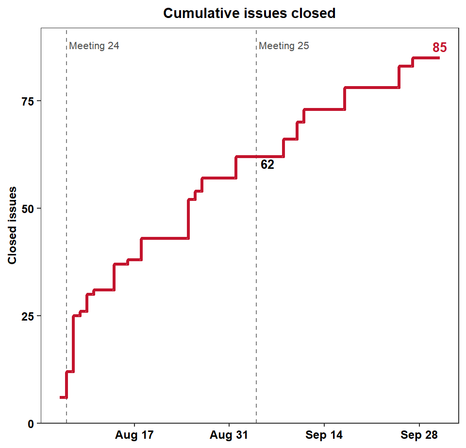
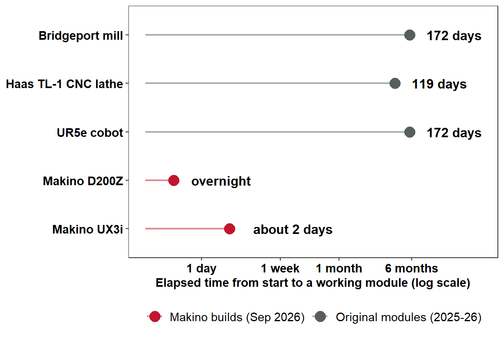

Meeting 26: SIGHT-VR v1.0.0, Two Makino Machines, the First SOP-Guided Mill Run, and Industry Outreach
October 02, 2026
Sixty minutes in seven blocks; block widths are proportional to the minutes allotted in the agenda.
Administrative / BWC
Technical
MaxByte
Closed session
| Responsible Party | Action Item | Due Date | Status |
|---|---|---|---|
| Jay / Mayyas | Procure backup Magic Leap 2 headset (non-BWC funds) | ASAP | ✓ Done: ordered Sep 7, delivered Sep 15 |
| Austin / Michael | Send weekly AR summaries to Jay | Weekly | ✓ Ongoing: Sep 8 to 11 and Sep 14 to 18 summaries circulated |
| Fadel | Schedule follow-up meeting on the human-subject testing protocol | Sep 11 | ✓ Done: Lora’s protocol draft and instruments posted Sep 13 to 19 |
| Ramshankar / MaxByte | Move CNC annotations from Google Drive to RoboFlow | ASAP | |
| Ibrahim / Austin | Secure the current Magic Leap 2 headset in Ibrahim’s locked office | Immediate | |
| Fadel | Prepare and circulate the Q5 report team draft | Oct 2 | |
| Fadel | Provide Meeting 25 slide decks to the BWC | ASAP | |
| Ibrahim | Assist Austin with CV model integration for the CNC CAD/3D | Next phase |
Fadel Megahed
| Bi-monthly meeting | DO 2.1 date | Revised date | Reason |
|---|---|---|---|
| September / October | Sep 4, 2026 | Held | |
| November / December | Nov 13, 2026 | Scheduled |
Photo: “Farmer School of Business” by Chris Staley, CC BY 2.0, via Wikimedia Commons.
Jeff Malek (Corporate Director of EHS, Industrious Group) spent about three hours with the team on Friday, Sep 25.
Met with: Fadel, Mayyas, Jay, Michael, and Ibrahim.
Thank you, Michael and Ibrahim, for leading the facility tours and the demonstrations of what we are building.
No photographs were taken during this visit. We will document the Cleveland visit with photos.
The Role of Generative AI in Safety Training (Fadel and Lora) · Status: submitted; decision pending

ASSP Safety 2027 Conference + Expo, New Orleans, June 7 to 9, 2027: safety.assp.org
Fadel Megahed and the AM Hub subteam
All six milestones closed; 85 of 85 issues closed. Dates are milestone close dates from the private GitHub repository arthurgcarvalho/SIGHT-VR, exported Oct 1, 2026. Live platform: sightvr.org.



Same 85 issues in all three charts. 23 issues were closed after Meeting 25: the cobot assessment flow (v0.8.0), dashboard separation of learning and assessment progress (v0.9.0), per-module assessments with feedback on where mistakes occurred, and two AI-assistant fixes (v1.0.0). Source: SIGHT-VR GitHub tracker, exported Oct 1, 2026; issue #87 has no reporter tag and is counted under Arthur.
34 commits to SIGHT-VR and 1 to SIGHT-AI since Sep 4, 2026, plus the 23 issues closed above. Source: GitHub commit logs and the issue tracker, exported Oct 1, 2026.
Narrated walkthrough (1 min 47 s) of the two training programs, unlisted on YouTube. Self-initiated demonstrations of scale; Makino has been contacted for feedback. Live: ux3i.sightvr.org.

What changed
Scope
Sep 30, 2026: Jay Shan operates the Bridgeport manual mill for the first time, following the revised mill SOP written by Michael Wise.
MaxByte
Ram and the MaxByte team will share their slides on recent developments deployed in the AM Hub.
Immersive Environment Testing: MaxByte and the evaluation team drop off here. Thank you, Ram.
Slides for this session are in a separate, password-protected deck (shared with Miami, Lora, and BWC/WSIC only): open the closed-session deck. It covers the machine SOPs, the AR build (Austin), and the experimental protocol draft (Lora).
All Project Members
| Risk | Mitigation | Status |
|---|---|---|
| Only one AR headset (Magic Leap 2, now discontinued) | A second Magic Leap 2 was procured with non-BWC funds: ordered Sep 7, delivered Sep 15, and now in use at the AM Hub. The longer-term hardware question (e.g., Meta Quest) remains for commercialization and Phase 3 planning. | Mitigated |
Contacts: Fadel Megahed (fmegahed@miamioh.edu) · Mohamed Farrag, PM (farragm2@miamioh.edu).
Q5 report due Oct 9; slides for BWC are due 7 to 10 days before the Oct 22 presentation.
Project funded by the Ohio BWC through their Worker Safety Innovation Center